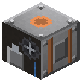

Steam Pump
Era 2Steam and mechanics

idle

running
Place right above water, driven by a pulley. Feeds adjacent boilers, tanks and pipes. By the sea Sneak + empty hand - fresh/seawater.
Parameters
| Era | 2 — Steam and mechanics |
|---|---|
| Multiblock | no |
| Drive | shaft 2 hp |
| Tanks, mB | 8000 |
| What it does | water from a source block below |
| Input energy | shaft 2 |
| Made of | bucket, piston, bronze gear, IC2 iron shaft, copper and iron plates |
Numbers
| steam pump | 2 hp |
|---|
Fed by
- shaft ← Steam Engine, High-Pressure Steam Engine (transmission)
Feeds
- no Zavod machine uses its product